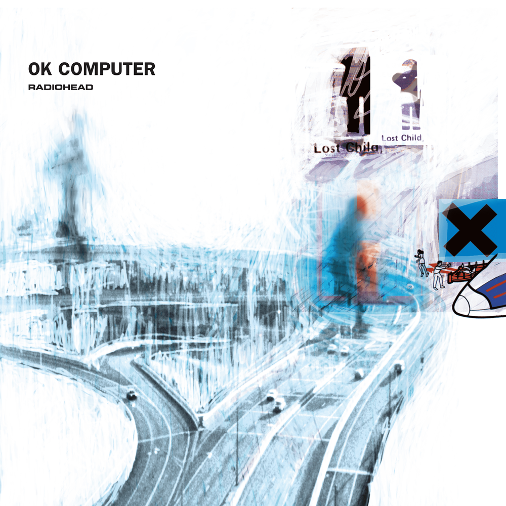
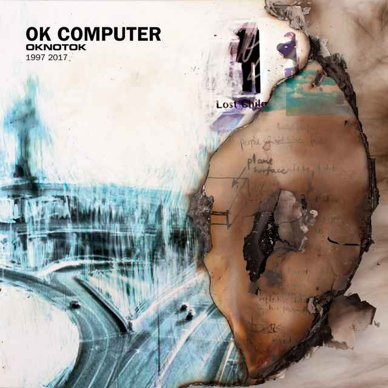

OK COMPUTER
OK Computer is the third studio album by the English rock band Radiohead, released on 21 May 1997. With their producer, Nigel Godrich, Radiohead recorded most of OK Computer in their rehearsal space in Oxfordshire and the historic mansion of St Catherine's Court in Bath in 1996 and early 1997. They distanced themselves from the guitar-centred, lyrically introspective style of their previous album, The Bends. OK Computer's abstract lyrics, densely layered sound and eclectic influences laid the groundwork for Radiohead's later, more experimental work.
The lyrics depict a dystopian world fraught with rampant consumerism, capitalism, social alienation, and political malaise, with themes such as transport, technology, insanity, death, modern British life, globalisation and anti-capitalism. In this capacity, OK Computer is said to have prescient insight into the mood of 21st-century life. The band used unconventional production techniques, including natural reverberation, and no audio separation. Strings were recorded at Abbey Road Studios in London. Most of the album was recorded live.
Despite lowered sales estimates by EMI, who deemed it uncommercial and difficult to market, OK Computer reached number one on the UK Albums Chart and debuted at number 21 on the Billboard 200, Radiohead's highest album entry on the US charts at the time, and was certified five times platinum by the British Phonographic Industry (BPI) in the UK and double platinum by the Recording Industry Association of America (RIAA) in the US. It expanded Radiohead's international popularity and has sold at least 7.8 million copies worldwide. "Paranoid Android", "Karma Police", "Lucky" and "No Surprises" were released as singles.
OK Computer received acclaim from critics and has been cited as one of the greatest albums of all time. It was nominated for Album of the Year and won Best Alternative Music Album at the 1998 Grammy Awards. It was also nominated for Best British Album at the 1998 Brit Awards. The album initiated a stylistic shift in British rock away from Britpop toward melancholic, atmospheric alternative rock that became more prevalent in the next decade. In 2014, it was added by the US Library of Congress to the National Recording Registry as "culturally, historically, or aesthetically significant". A remastered version with additional tracks, OKNOTOK 1997 2017, was released in 2017. In 2019, in response to an internet leak, Radiohead released MiniDiscs [Hacked], comprising hours of additional material.
OKNOTOK
OK Computer OKNOTOK 1997 2017 is a reissue of the 1997 album OK Computer by the English rock band Radiohead. It was released in June 2017, the album's 20th anniversary, following the 2016 acquisition of Radiohead's back catalogue by XL Recordings from EMI.
OKNOTOK comprises remastered versions of OK Computer and its B-sides, plus three previously unreleased songs: "I Promise", "Man of War" and "Lift". The special edition includes an art book, notes, and a cassette tape of demos and session recordings. Unlike previous Radiohead reissues, which were released by EMI and contained no new material, Radiohead curated the OKNOTOK material themselves.
Radiohead promoted OKNOTOK with a teaser campaign of posters and videos. Music videos were released for the three new songs, and "I Promise" and "Man of War" were released as singles. OKNOTOK debuted at number two in the UK Albums Chart and was the bestselling album in UK independent record stores for a year. In the US, it reached number 23 on the Billboard 200. It received acclaim, particularly for its bonus material.